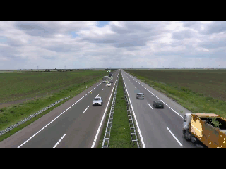
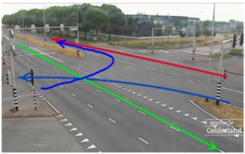
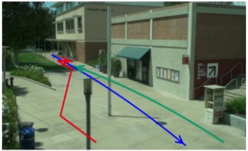
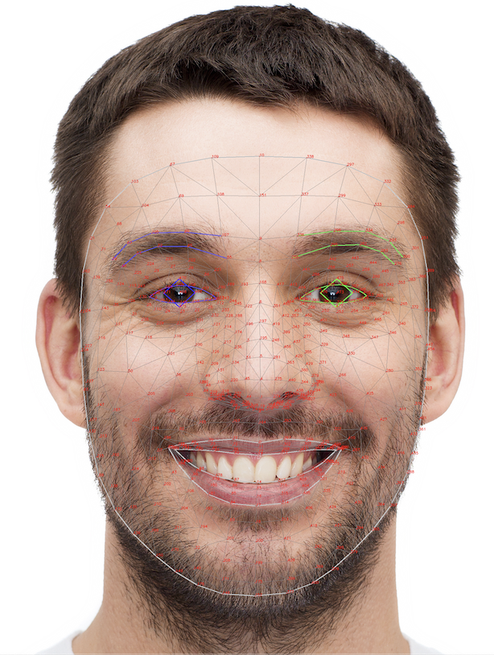

Surveillance Video Synopsis and Analysis
- Implemented for Iran's National Elites Foundation
- Using OpenCv and deep learning techniques for saving essential events.
- Two types of videos, including the traffic videos and surveillance videos(including pedestrians)have been focused on in this project.
- Developing some practical approaches for summarizing these types of videos
- Implementing some analytical methods for anomaly detection
- Using Hough Transform for lane detection
- Using hierarchical clustering and dynamic time warping for directions clustering
Reconstructing Summarized Videos


Different Analysis like obtaining the most common Trajectories


Fatigue Detection and Patient Assistant Tools using Eye key points
- Using the eye key points to measure the level of fatigue by measuring number and Duration of eye blinks
- Eye tracking to ease the way of communication using a virtual keyboard

Action Recognition in Compressed Domain Video
- Using compressed domain elements like Motion Vectors and Residuals for detecting events in a video.
- Implementing a new approach by using a window for accumulating the residuals in order to reduce the number of processed residual frames in compressed domain analysis.
- Using one-dimensional convolutional layers for fast and efficient temporal pooling.